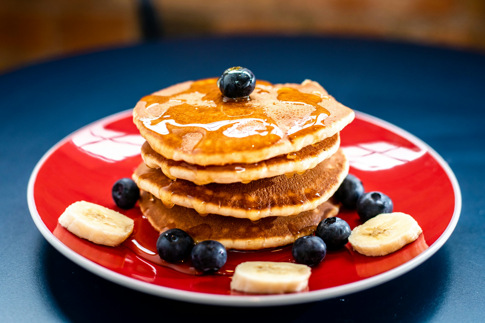

Recipe Information
Preparation time: 10 minutes
Cooking time: 15 minutes
Number of servings: 4 servings
Difficulty level: Beginner

Ingredients
- 2 cups flour
- 2 tablespoons sugar
- 2 teaspoons baking powder
- 1 teaspoon salt
- 2 eggs
- 3/4 cups milk
- 1/4 cup butter to be melted
- 1 teaspoon vanilla extract(optional)
- Butter or oil for frying
Instructions
- In a large bowl, whisk together the flour, sugar, baking powder, and salt until well combined.
- In a another bowl beat eggs and then add milk, melted butter, and the vanilla extract. Mix thouroughly.
- Pour the egg milk and butter mixture into the flour, sugar and bakingpowder and stir gently until combined. Donot overmix.
- Heat you pan with medium heat then lightly put butter or oil.
- Pour small batter for each pancake onto the hot pan. Cook until edges look done, about 2-3 minutes.
- Flip the pancakes and cook for another 1-2 minutes until a little brown on both sides.
- Serve immediately while hot with tea or your favorite toppings.
Tips
Important tips for perfect pancakes: Don't overmix the batter as this will make tough pancakes. Let the batter rest for 2-3 minutes before cooking to allow the flour to hydrate. Make sure your griddle is at the right temperature - a drop of water should sizzle and evaporate quickly. Keep finished pancakes warm in a 200°F oven while cooking the remaining batches.
Nutrition Facts
Per serving (3 pancakes):
- Calories: 285
- Total Fat: 8g
- Saturated Fat: 5g
- Cholesterol: 65mg
- Sodium: 720mg
- Total Carbohydrates: 45g
- Dietary Fiber: 2g
- Sugars: 8g
- Protein: 9g